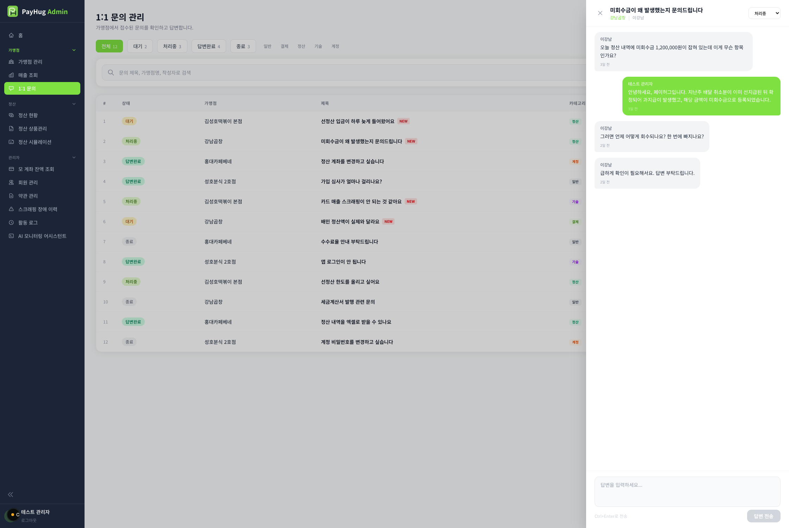

| No | 이름 | 설명 |
|---|---|---|
| 1 | 진입· 오버레이 | 목록에서 행을 누르면 오른쪽에서 패널이 슬라이드로 열림뒤 배경은 반투명 딤 처리 · 딤 클릭 또는 왼쪽 X로 닫힘열리는 동안 상세를 서버에서 불러옴 (로딩 표시) |
| 2 | 패널 헤더 | 문의 제목(길면 …) · 그 아래 가맹점명 · 작성자가맹점명은 링크 — 누르면 가맹점 상세[AD_MERCHANT_DT]로 이동단, 탭으로 열리는 모드에서만 이동 · 일반 모드에선 눌러도 반응 없음 — 개발 확인 필요2-1 상태 드롭다운 (우상단)대기 · 처리중 · 답변완료 · 종료 중 골라 바로 상태 변경 (서버 반영 + 목록 새로고침)답변을 보내도 상태가 자동으로 바뀌지 않음 — 관리자가 직접 바꿔야 함 |
| 3 | 메시지 스레드 | 말풍선 대화 — 가맹점 = 왼쪽 회색, 관리자 = 오른쪽 초록각 말풍선에 발신자명 · 시각(방금 전/N분 전…) 표시 · 줄바꿈 그대로새 글이 오면 맨 아래로 자동 스크롤상황별 문구불러오는 중 → 로딩 표시메시지 없음 → "아직 메시지가 없습니다." |
| 4 | 답변 입력· 종료 잠금 | 하단 답변 입력창(여러 줄) · 안내문 : "답변을 입력하세요..."Ctrl+Enter로 전송 · 안내 "Ctrl+Enter로 전송"[답변 전송] 버튼 — 빈 값이거나 전송 중이면 비활성, 전송 중엔 "전송 중..."전송하면 입력창 비우고 스레드·목록 갱신관리자 로그인 정보가 없으면 조용히 중단 (안내 없음) — 개발 확인 필요종료 상태면 입력창 대신 "종료된 문의입니다." 회색 안내 (답변 잠김) |